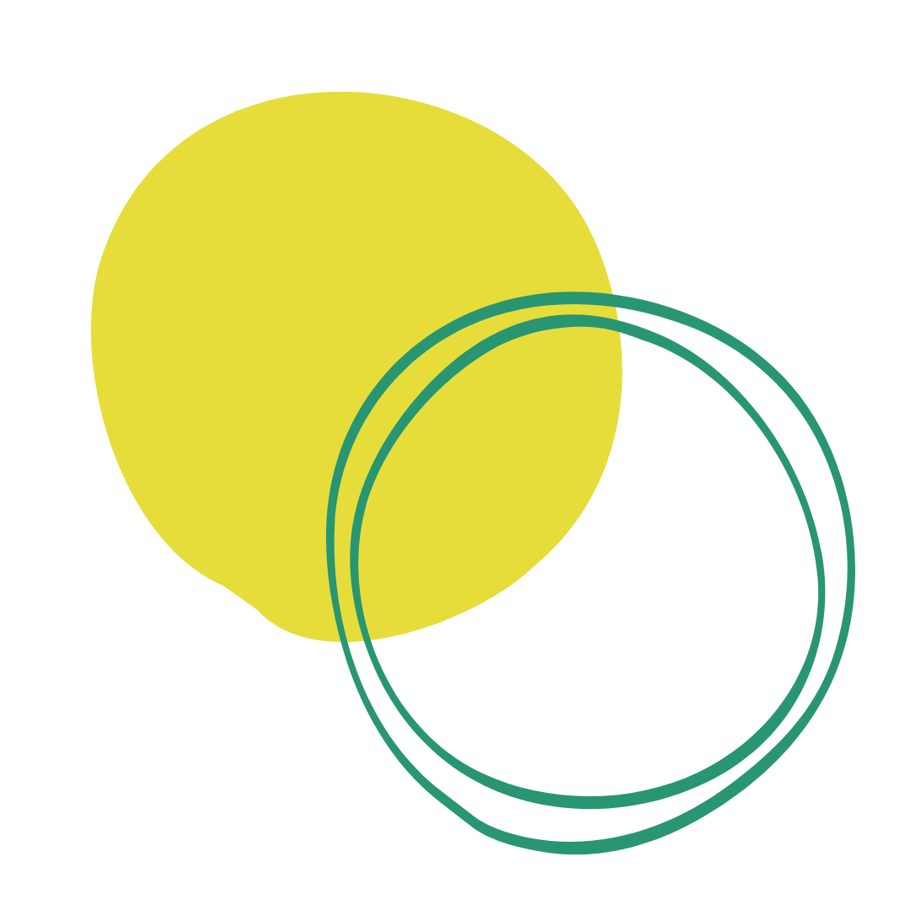

My Story

For the past fifteen years, I've worked directly with customers in
operations and marketing roles. And for the past three, I've been
leading the strategy, operations and growth of our
direct-to-consumer products at
Flux, a Series-A fintech backed by Barclays, Anthemis and Headline
(to name a few!).
Although I love my job, it never really scratched my creative
itch. I've always been fascinated with coding and dabbled in it
from a young age (GeoCities and MySpace, anyone?), so I've
recently taken the plunge and formally trained as a frontend
developer. Now, I'm looking for the perfect role to kick-start my
career!
In addition to my technical skills, I can offer incredibly
valuable insight about the customer journey and the people using
the products we build. The road to product-market fit is hard, but
my strategic experience with product development, growth and
customer acquisition and retention can help you get there faster.
I'm a trained public speaker and have been recruiting, leading and
mentoring cross-functional business teams for the past decade. I
also "speak tech" and am a valuable asset when it comes to
translating business needs to technical outputs.
I also just really love to code!
It's incredibly fulfilling to see something come to life that
you've built, and the endless opportunities to solve difficult
problems is very appealing to me. I am a quick learner and am
looking for an opportunity that allows me to learn something new
everyday - whether it's languages, ways of working or new
technologies.
Check out my portfolio showcasing some
of my recent work
here.